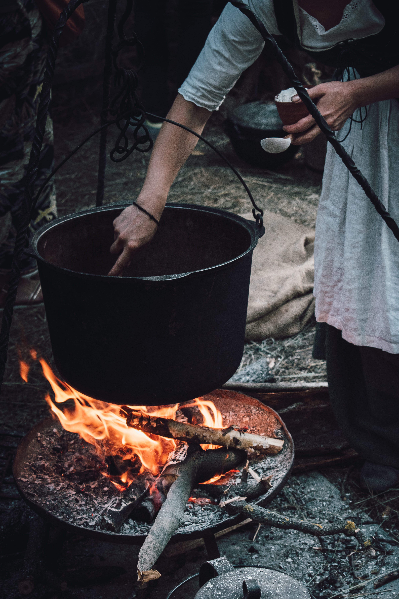

Odin Recipes
Brewing a love potion!
“Real witches dress in ordinary clothes and look very much like ordinary women. They live in ordinary houses, and they work in ordinary jobs.”

Ingredients
Gather the following items to power the incantation:
- Some lard
- 20+1 Rose petals
- Dust from 7 Pearls
- 1 cup of Honey
- 2 branches of lavender
- 2 sticks of cinnamon
- Spoonful of Vanilla Seeds
- 1/2 cup of Patchouli oil
- 1/2 cup of Clove oil
- 3 cups of water
The setting: Time and Place
This potio will brew for hours. From high noon till dawn.
Preparations:
- Ready your cauldron
- Light a gentle fire
- Spread a thin layer of lard inside the cauldron
- Wait a few minutes
- Add the water
- Wait until the water boils
- Add the cup of honey
- Deposit the 20 petails gently, one by one
- Drop in the sticks of cinnamon and the lavender
- Sprinkle the vanilla seeds on top of the mixture
- Wait for 1 hour
- Add the Pearl Dust
- Pour the Clove and Patchouli oils
- adjust your fire and let simmer until dawn
- Collect the residual oily mixture in a transparent jar>
- Add the last rose petal into the jar
- Seal the jar with a wax for 3 months
Usage:
- Dip a finger into the oily potion
- Apply the potion on both arms
Back to homepage